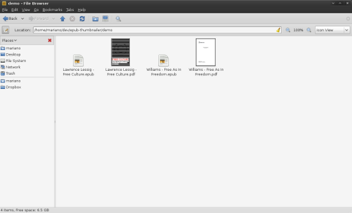

epub-thumbnailer is a little script I wrote because I wanted to see thumbnails of my epub books while browsing my collection:

Thumbnails for pdf, but not for epub
After doing some googling, and not being able to find what I wanted (but learning something about the matter), I came up with epub-thumbnailer (you'll find download and install instruction at GitHub):
thumbnails for everyone!
which is not only better than nothing, but also better than pfd thumbnails, as it displays the cover, and not just the first page.
epub-thumbnailer can be integrated with nautilus, but also used as a stand-alone script, or even a a tool for some other project, you just have to:
user@computer:$ epub-thumbnailer
For example:
user@computer:$ epub-thumbnailer Lawrence\ Lessig\ -\ Free\ Culture.epub cover.png 128
will look into the epub to find its cover, and will generate a 128px png file (named cover.png)